東京大学 2015年 理科 第3問
問題
aを正の実数とし、pを正の有理数とする。
座標平面上の2つの曲線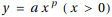とy=log x (x>0)を考える。この2つの曲線の共有点が1点のみであるとし、その共有点をQとする。
以下の問いに答えよ。必要であれば、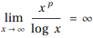を証明なしに用いてよい。
(1) aおよび点Qのx座標をpを用いて表せ。
(2) この2つの曲線とx軸で囲まれる図形を、x軸のまわりに1回転してできる立体の体積をpを用いて表せ。
(3) (2)で得られる立体の体積が2πになるときのpの値を求めよ。
解答
(1)
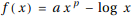とする。
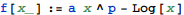
2つの曲線が1点のみであるから、点Qでこの2曲線は接するから
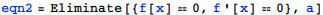
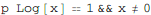
従って点Qのx座標は
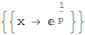
これを使ってaについて解いて
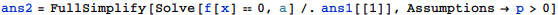
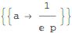
(2)
求める体積をV(p)として、
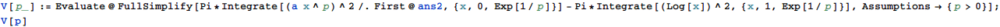
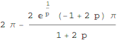
(3)
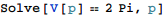
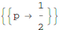
補足・感想
Solveを直接使うと一意の解を得られないため、Eliminateを使って同値性を維持しながら解いた。